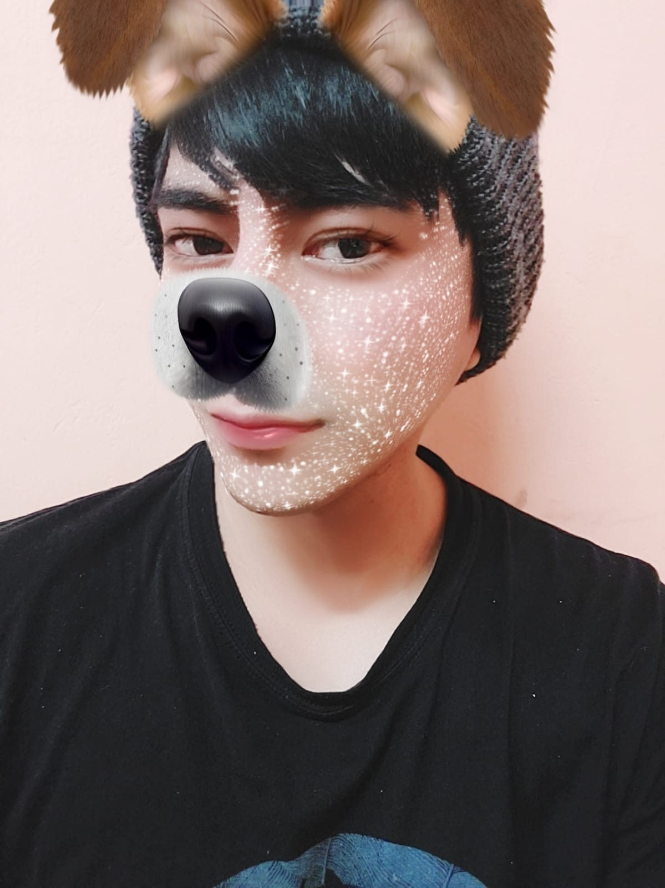
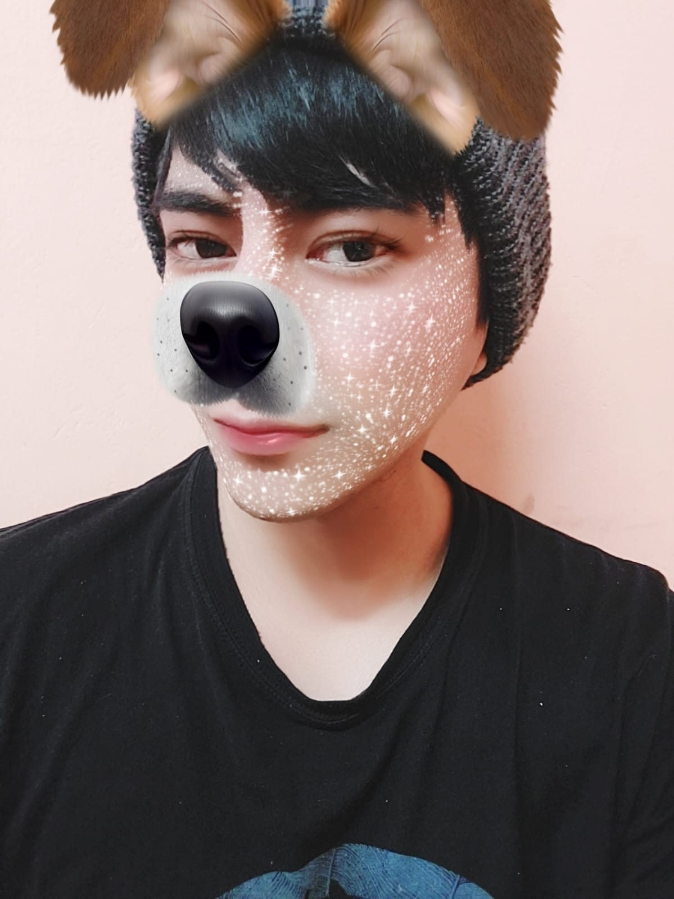
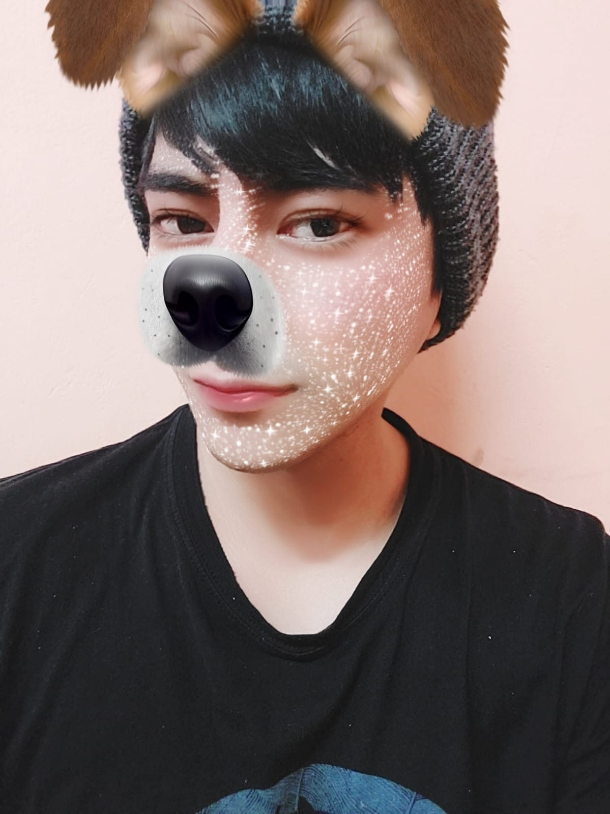

Nuestra Galería
 


Un pequeño regalo hecho con mucho amor.
13 de abril de 2023: El día que nos escribimos por primera vez. ❤️
22 de diciembre de 2023: ¡Nos conocimos en persona por primera vez! üåü
10 de enero de 2024: Nuestra segunda salida, ¡fue un d√≠a inolvidable! No tengo üò•fotitos si tienes me avisas jejeüíï
1 de febrero de 2024: Una salida más, con más recuerdos hermosos juntos. ü•∞

"Feliz D√≠a de San Valent√≠n, mi bb ü•∞ ¿Sabes? A veces pienso que el universo fue muy sabio al cruzar nuestros caminos. No s√© si fue casualidad o destino, pero lo que s√≠ s√© es que tú llegaste a mi vida cuando más te necesitaba, aunque aún no lo supiera. Desde ese primer mensaje hasta cada momento que hemos compartido en persona, tú has hecho que mi vida sea más bonita. Cada vez que nos encontramos, siento que el tiempo se detiene, como si nada más importara en el mundo excepto tú y yo. Esos instantes son los que guardo como los tesoros más valiosos en mi coraz√≥n. Eres mi persona favorita, Jin. Cada sonrisa tuya ilumina mis d√≠as, y cada abrazo me hace sentir que todo estará bien, no importa lo dif√≠cil que sea la vida. Gracias por ser tan único, tan aut√©ntico, y por regalarme la suerte de conocerte. Verte en persona me confirm√≥ lo que siempre sent√≠: que eres alguien incre√≠ble, alguien a quien siempre quiero cuidar, apoyar y llenar de felicidad. A veces pienso en lo que has pasado, en tu fortaleza, y no puedo evitar admirarte aún más. Quiero que sepas que no estás solo, que yo estoy aqu√≠ para ti, siempre. Si alguna vez sientes dudas, inseguridades o tristeza, recuerda que tienes a alguien que te quiere de una manera que no puede explicarse con palabras. Jin, no hay distancia que pueda separar lo que siento por ti. No hay d√≠a en que no piense en lo afortunada que soy por tenerte en mi vida. Y aunque el futuro sea incierto, quiero caminarlo contigo, porque contigo todo vale la pena. Te quiero más allá de lo que las palabras pueden expresar. Gracias por ser mi compa√±ero, mi amigo y mi San Valent√≠n. Hoy celebro no solo el amor, sino a ti, por ser quien eres y por hacerme tan feliz. ‚ù§Ô∏è Con la bendici√≥n de Dios, siempre, tu Mitzy. üåπüíï"